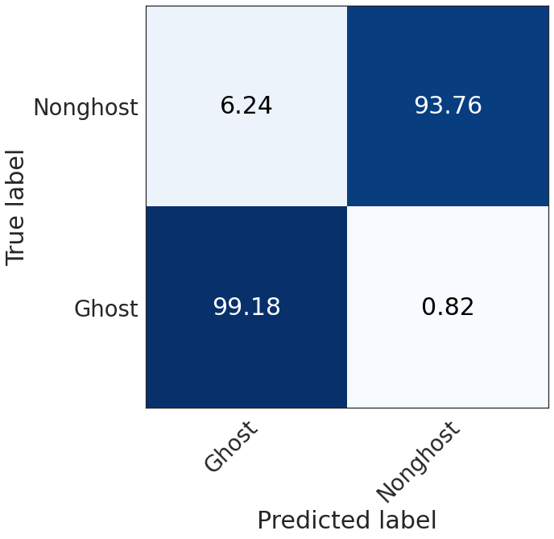
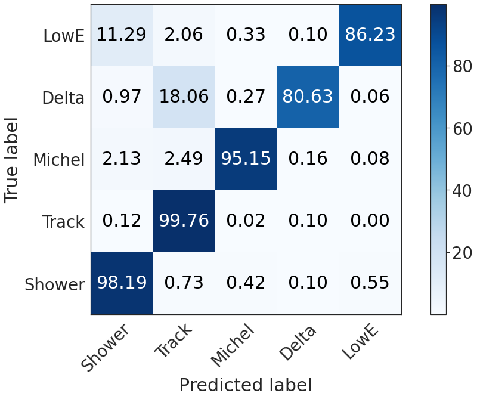
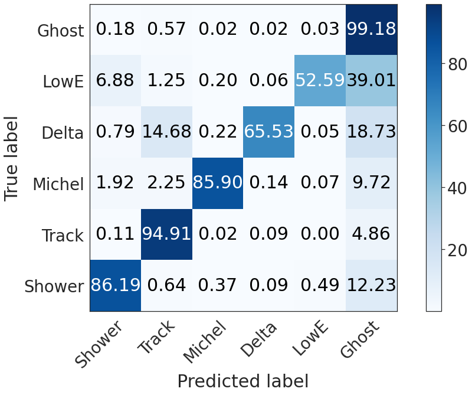
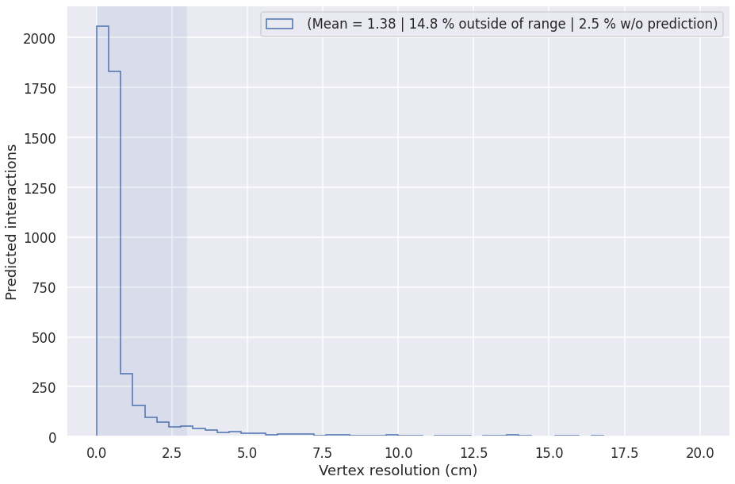

Shared metrics (raw output)¶
This page is meant to share reproducible metrics for each stage of the full chain. Feel free to open it in Binder to customize the visualization.
Warning
None of these metrics are convolved with the analysis tools.
Note
Technical details
Config location: config/chain/metrics.cfg
Sample was generated with MPV/MPR generator using icaruscode v09_49_00.
import numpy as np
import pandas as pd
import matplotlib
from matplotlib import pyplot as plt
import seaborn
seaborn.set(rc={
'figure.figsize':(15, 10),
})
seaborn.set_context('talk') # or paper
import os
METRICS_FOLDER = '/sdf/group/neutrino/ldomine/chain/me/mpvmpr_062022/log_metrics3/'
UResNet¶
Confusion matrix¶
def plot_confusion_matrix(cm,
normalize=False,
title=None,
cmap=plt.cm.Blues,
xlabel='Predicted label',
ylabel='True label',
xticklabels=['Shower', 'Track', 'Michel', 'Delta', 'LowE'],
yticklabels=['Shower', 'Track', 'Michel', 'Delta', 'LowE'],
show_colorbar=True):
"""
This function prints and plots the confusion matrix.
Normalization can be applied by setting `normalize=True`.
"""
fig, ax = plt.subplots()
#print(cm.shape)
im = ax.imshow(cm, interpolation='nearest', cmap=cmap)
if show_colorbar:
ax.figure.colorbar(im, ax=ax)
#labels = ['HIP', 'MIP', 'Shower', 'Delta', 'Michel']
labels = yticklabels
# We want to show all ticks...
ax.set(xticks=np.arange(cm.shape[1]),
yticks=np.arange(cm.shape[0]),
# ... and label them with the respective list entries
xticklabels=xticklabels, yticklabels=labels,
title=title,
ylabel=ylabel,
xlabel=xlabel,
ylim=(-0.5, cm.shape[0]-0.5))
# Rotate the tick labels and set their alignment.
plt.setp(ax.get_xticklabels(), rotation=45, ha="right",
rotation_mode="anchor")
# Loop over data dimensions and create text annotations.
fmt = '.2f'
thresh = cm.max() / 2.
for i in range(cm.shape[0]):
for j in range(cm.shape[1]):
ax.text(j, i, format(cm[i, j], fmt),
ha="center", va="center",
color="white" if cm[i, j] > thresh else "black")
fig.tight_layout()
return ax
from numpy.linalg import norm
range = __builtins__.range
def confusion_matrix(metrics, num_classes):
x = np.zeros((num_classes+1, num_classes+1))
for c in range(num_classes):
for c2 in range(num_classes):
x[c][c2] = np.nansum(metrics['confusion_%d_%d' % (c, c2)])
x[c][-1] = np.nansum(metrics['num_true_pix_class%d' % c]-metrics['num_true_deghost_pix_class%d' % c])
x[num_classes][c] = np.nansum(metrics['ghost2nonghost_class%d' % c])
x[num_classes, num_classes] = np.nansum((metrics['ghost2ghost'])*metrics['num_ghost_points'])
return x / x.sum(axis=1, keepdims=True)
def confusion_matrix2(metrics, num_classes):
x = np.zeros((num_classes, num_classes))
for c in range(num_classes):
for c2 in range(num_classes):
x[c][c2] = np.nansum(metrics['confusion_%d_%d' % (c, c2)])
return x / x.sum(axis=1, keepdims=True)
deghosting = pd.read_csv(os.path.join(METRICS_FOLDER, 'deghosting_metrics.csv'))
Ghost vs nonghost confusion matrix¶
cm = np.empty((2, 2))
cm[0, 0] = (deghosting['ghost2ghost']*deghosting['num_ghost_points']).sum()
cm[0, 1] = (deghosting['num_ghost_points'] * (1 - deghosting['ghost2ghost'])).sum()
cm[1, 1] = (deghosting['nonghost2nonghost'] * deghosting['num_nonghost_points']).sum()
cm[1, 0] = (deghosting['num_nonghost_points']* (1 -deghosting['nonghost2nonghost'] )).sum()
cm[0, :] /= cm[0, :].sum()
cm[1, :] /= cm[1, :].sum()
seaborn.set(style="white", font_scale=2.5)
plot_confusion_matrix(np.array(cm*100),
show_colorbar=False,
xticklabels=['Ghost', 'Nonghost'],
yticklabels=['Ghost', 'Nonghost'])
seaborn.set(rc={
'figure.figsize':(15, 10),
})
seaborn.set_context('talk')

Semantic confusion matrix, nonghost only¶
We restrict the voxels to the true nonghost voxels correctly predicted as nonghost.
seaborn.set(style="white", font_scale=2.5)
plot_confusion_matrix(np.array(confusion_matrix2(deghosting, 5)*100))
seaborn.set(rc={
'figure.figsize':(15, 10),
})
seaborn.set_context('talk')

Global semantic confusion matrix (including ghosts)¶
seaborn.set(style="white", font_scale=2.5)
plot_confusion_matrix(np.array(confusion_matrix(deghosting, 5)*100),
xticklabels = ['Shower', 'Track', 'Michel', 'Delta', 'LowE', 'Ghost'],
yticklabels = ['Shower', 'Track', 'Michel', 'Delta', 'LowE', 'Ghost'])
seaborn.set(rc={
'figure.figsize':(15, 10),
})
seaborn.set_context('talk')

PPN¶
logs_gt = pd.read_csv(os.path.join(METRICS_FOLDER, "ppn-metrics-gt.csv"))
logs_pred = pd.read_csv(os.path.join(METRICS_FOLDER, "ppn-metrics-pred.csv"))
no_delta_pred = logs_pred['score_type_3'] < 0.5
#print("After removing delta points, keeping:", np.count_nonzero(no_delta_pred)/no_delta_pred.shape[0])
r = [0, 10]
bins = 60 #25
f= plt.figure()
fraction1 = np.count_nonzero(logs_pred[no_delta_pred]['min_distance']<r[1])/len(logs_pred[no_delta_pred])
plt.hist(logs_pred[no_delta_pred]['min_distance'], range=r, bins=bins, histtype='step', label='To closest true point \n (%.2f %% included in plot)' % (fraction1*100))
#print("Fraction of predicted points included in plot = ", fraction1)
print("Median of pred. points within 3px of true point = ", np.median(logs_pred[no_delta_pred]['min_distance'][logs_pred[no_delta_pred]['min_distance']<3]))
print("Median of pred. points within 5px of true point = ", np.median(logs_pred[no_delta_pred]['min_distance'][logs_pred[no_delta_pred]['min_distance']<5]))
no_delta_gt = logs_gt['Class'] != 3
fraction2 = np.count_nonzero(logs_gt[no_delta_gt]['min_distance']<r[1])/len(logs_gt[no_delta_gt])
plt.hist(logs_gt[no_delta_gt]['min_distance'], range=r, bins=bins, histtype='step', label='To closest predicted point \n (%.2f %% included in plot)' % (fraction2*100))
plt.legend()
plt.yscale('log')
plt.xlabel('Distance (px)')
plt.ylabel('Points')
#print("Fraction of true points included in plot = ", fraction2)
Median of pred. points within 3px of true point = 0.73424
Median of pred. points within 5px of true point = 0.77339
Text(0, 0.5, 'Points')
GraphSpice (CNN clustering)¶
graph_spice = pd.read_csv(os.path.join(METRICS_FOLDER, "graph-spice-metrics.csv"))
nonzero_ari = graph_spice['ARI'] > 0
# print(np.count_nonzero(nonzero_ari)/len(graph_spice))
fig, axs = plt.subplots(2,1, gridspec_kw={'height_ratios': [1, 3]})
axs[0].boxplot([
graph_spice['efficiency'][nonzero_ari],
graph_spice['purity'][nonzero_ari],
graph_spice['ARI'][nonzero_ari]
], vert=False, showmeans=True,showfliers=False)
axs[0].set_yticklabels(['Efficiency', 'Purity', 'ARI'])
axs[0].set_xlim(0.7, 1.)
axs[0].xaxis.tick_top()
axs[1].hist(graph_spice['ARI'][nonzero_ari], range=[0, 1], bins=100, label='ARI (Mean %.4f)' % graph_spice['ARI'][nonzero_ari].mean(), histtype='step')
axs[1].hist(graph_spice['purity'][nonzero_ari], range=[0, 1], bins=100, label='Purity (Mean %.4f)' % graph_spice['purity'][nonzero_ari].mean(), histtype='step')
axs[1].hist(graph_spice['efficiency'][nonzero_ari], range=[0, 1], bins=100, label='Efficiency (Mean %.4f)' % graph_spice['efficiency'][nonzero_ari].mean(), histtype='step')
plt.legend(loc='upper left')
plt.yscale('log')
plt.xlabel('Track Fragment Clustering Metric')
Text(0.5, 0, 'Track Fragment Clustering Metric')
Grappa¶
Shower clustering¶
logs = pd.read_csv(os.path.join(METRICS_FOLDER, "cluster-gnn-metrics-shower.csv"))
fig, axs = plt.subplots(2,1, gridspec_kw={'height_ratios': [1, 3]})
axs[0].boxplot([
logs['eff'][logs['ari']>0],
logs['pur'][logs['ari']>0],
logs['ari'][logs['ari']>0]
], vert=False, showmeans=True,showfliers=False)
axs[0].set_yticklabels(['Efficiency', 'Purity', 'ARI', ])
axs[0].set_xlim(0.96, 1.)
axs[0].xaxis.tick_top()
axs[1].hist(logs['ari'][logs['ari']>0], label="ARI (Mean: %.4f)" % logs['ari'][logs['ari']>0].mean(), histtype='step', range=[0, 1], bins=100)
axs[1].hist(logs['pur'][logs['ari']>0], label="Purity (Mean: %.4f)" % logs['pur'][logs['ari']>0].mean(), histtype='step', range=[0, 1], bins=100)
axs[1].hist(logs['eff'][logs['ari']>0], label="Efficiency (Mean: %.4f)" % logs['eff'][logs['ari']>0].mean(), histtype='step', range=[0, 1], bins=100)
plt.legend(loc='upper left')
plt.yscale('log')
plt.xlabel('Shower Clustering Metric')
Text(0.5, 0, 'Shower Clustering Metric')
print("Accuracy of primary shower fragment identification: %.1f%%" % (logs['primary_accuracy'].mean()*100))
Accuracy of primary shower fragment identification: 68.6%
Track clustering¶
logs = pd.read_csv(os.path.join(METRICS_FOLDER, "cluster-gnn-metrics-track.csv"))
fig, axs = plt.subplots(2,1, gridspec_kw={'height_ratios': [1, 3]})
axs[0].boxplot([
logs['eff'][logs['ari']>0],
logs['pur'][logs['ari']>0],
logs['ari'][logs['ari']>0]
], vert=False, showmeans=True,showfliers=False)
axs[0].set_yticklabels(['Efficiency', 'Purity', 'ARI', ])
axs[0].set_xlim(0.97, 1.)
axs[0].xaxis.tick_top()
axs[1].hist(logs['ari'][logs['ari']>0], label="ARI (Mean: %.4f)" % logs['ari'][logs['ari']>0].mean(), histtype='step', range=[0, 1], bins=100)
axs[1].hist(logs['pur'][logs['ari']>0], label="Purity (Mean: %.4f)" % logs['pur'][logs['ari']>0].mean(), histtype='step', range=[0, 1], bins=100)
axs[1].hist(logs['eff'][logs['ari']>0], label="Efficiency (Mean: %.4f)" % logs['eff'][logs['ari']>0].mean(), histtype='step', range=[0, 1], bins=100)
plt.legend(loc='upper left')
plt.yscale('log')
plt.xlabel('Track Clustering Metric')
Text(0.5, 0, 'Track Clustering Metric')
Interaction clustering¶
logs = pd.read_csv(os.path.join(METRICS_FOLDER, "cluster-gnn-metrics-inter.csv"))
fig, axs = plt.subplots(2,1, gridspec_kw={'height_ratios': [1, 3]})
axs[0].boxplot([
logs['eff'][logs['ari']>0],
logs['pur'][logs['ari']>0],
logs['ari'][logs['ari']>0]
], vert=False, showmeans=True,showfliers=False)
axs[0].set_yticklabels(['Efficiency', 'Purity', 'ARI', ])
axs[0].set_xlim(0.95, 1.)
axs[0].xaxis.tick_top()
axs[1].hist(logs['ari'][logs['ari']>0], label="ARI (Mean: %.4f)" % logs['ari'].mean(), histtype='step', range=[0, 1], bins=100)
axs[1].hist(logs['pur'][logs['ari']>0], label="Purity (Mean: %.4f)" % logs['pur'].mean(), histtype='step', range=[0, 1], bins=100)
axs[1].hist(logs['eff'][logs['ari']>0], label="Efficiency (Mean: %.4f)" % logs['eff'].mean(), histtype='step', range=[0, 1], bins=100)
plt.legend(loc='upper left')
plt.yscale('log')
plt.xlabel('Interaction Clustering Metric')
Text(0.5, 0, 'Interaction Clustering Metric')
Note
Need to add primary particles accuracy.
Others¶
PID¶
def plot_confusion_matrix(cm,
normalize=False,
title=None,
cmap=plt.cm.Blues,
xlabel='Predicted label',
ylabel='True label'):
"""
This function prints and plots the confusion matrix.
Normalization can be applied by setting `normalize=True`.
"""
#xticklabels = ['HIP', 'MIP', 'Shower', 'Delta', 'Michel']
xticklabels = ['Photon', '$e$', '$\mu$', '$\pi$', 'Proton']
if cm.shape[1] > 5:
xticklabels.append('Ghost')
# if cm.shape[1] > 5:
# xticklabels.append('Ghost')
fig, ax = plt.subplots()
print(cm.shape)
im = ax.imshow(cm, interpolation='nearest', cmap=cmap)
ax.figure.colorbar(im, ax=ax)
#labels = ['HIP', 'MIP', 'Shower', 'Delta', 'Michel']
labels = ['Photon', '$e$', '$\mu$', '$\pi$', 'Proton']
# We want to show all ticks...
ax.set(xticks=np.arange(cm.shape[1]),
yticks=np.arange(cm.shape[0]),
# ... and label them with the respective list entries
xticklabels=xticklabels, yticklabels=labels,
title=title,
ylabel=ylabel,
xlabel=xlabel,
ylim=(-0.5, cm.shape[0]-0.5))
# Rotate the tick labels and set their alignment.
plt.setp(ax.get_xticklabels(), rotation=45, ha="right",
rotation_mode="anchor")
# Loop over data dimensions and create text annotations.
fmt = '.2f'
thresh = cm.max() / 2.
for i in range(cm.shape[0]):
for j in range(cm.shape[1]):
ax.text(j, i, format(cm[i, j], fmt),
ha="center", va="center",
color="white" if cm[i, j] > thresh else "black")
fig.tight_layout()
return ax
from numpy.linalg import norm
def confusion_matrix(kinematics, num_classes):
x = np.zeros((num_classes, num_classes))
for c in range(num_classes):
for c2 in range(num_classes):
x[c][c2] = np.count_nonzero((kinematics['true_type'] == c) & (kinematics['pred_type'] == c2) )
#x[c][-1] = np.nansum(metrics['num_true_pix_class%d' % c]-metrics['num_true_deghost_pix_class%d' % c])
return x / x.sum(axis=1, keepdims=True)
kinematics = pd.read_csv(os.path.join(METRICS_FOLDER, "pid-metrics.csv"))
seaborn.set(style="white", font_scale=2.5)
plot_confusion_matrix(np.array(confusion_matrix(kinematics, 5)*100))
#plt.savefig("confusion_matrix.png", transparent=True)
seaborn.set(rc={
'figure.figsize':(15, 10),
})
seaborn.set_context('talk')
(5, 5)
Vertex heuristic performance¶
This plot is computed on MPV (particle gun) interactions with at least 2 primaries.
def plot_vtx_resolution(vtx_candidates, label=''):
vtx_predicted = (vtx_candidates['vtx_resolution'] >= 0)
min_primaries = (vtx_candidates['num_primaries'] > 1) #& (vtx_candidates['num_pix'] > 20)
nu_filter = (vtx_candidates['is_nu'] > 0)
r = [0, 20]
vtx_filter = vtx_predicted & min_primaries & nu_filter
no_prediction = np.count_nonzero(~vtx_predicted & min_primaries & nu_filter)/np.count_nonzero(min_primaries & nu_filter) * 100
outside = np.count_nonzero(vtx_filter & (vtx_candidates['vtx_resolution'] > r[1]))/np.count_nonzero(vtx_filter)*100
mean_range = [0, 3]
mean = vtx_candidates['vtx_resolution'][vtx_filter][(vtx_candidates['vtx_resolution'][vtx_filter] > mean_range[0]) & (vtx_candidates['vtx_resolution'][vtx_filter] < mean_range[1])].mean()
plt.hist(vtx_candidates['vtx_resolution'][vtx_filter]*0.3, range=r, bins=50, histtype='step', label='%s (Mean = %.2f | %.1f %% outside of range | %.1f %% w/o prediction)' % (label, mean, outside, no_prediction))
plt.xlabel('Vertex resolution (cm)')
plt.ylabel('Predicted interactions')
plt.gca().axvspan(mean_range[0], mean_range[1], alpha=0.1)
plt.legend()
vtx_candidates = pd.read_csv(os.path.join(METRICS_FOLDER, "vertex-candidates.csv"))
plot_vtx_resolution(vtx_candidates)
